Wollemiは完全にオープンでモジュラーな小型衛星プラットフォームであり、その最初のミッションは、設定ファイルからエンドツーエンドで生成され、あらゆる変更に対して自動回帰テストでチェックされる、階層的な50年生存設計を持つ科学優先の12Uキューブサットです。
ドラッグして軌道を描き、一度クリックするとスクロールしてズームできるようになります。これは画像ではなく、実際のパラメトリックCADモデルです。
スライドウェアなし：このページ上のすべてのレンダリング、図、数字は、一つ実在し確認されたモデルから来ています。それを変更すると、ページもそれに合わせて変更されます。
Wollemiは、オープンでモジュール式、長寿命の12Uの科学観測所およびリファレンスプラットフォームです。これは、数十年にわたる宇宙天気、放射線、地球観測データを生成し、軌道上での堅牢な電子工学とソフトウェアを実証し、デザイン、データ、およびツールを誰でも再利用できるように公開しています。
長期記録データ：磁場、高エネルギー粒子、太陽X線/UV、全太陽放射照度、放射線量、プラズマ、VLF、ガンマ線バースト。
5 m クラス撮像望遠鏡、同じ光学系を共有するハイパースペクトルシーン、熱赤外、広視野夜間画像。
異なる3つのコンピューティングファミリーとフラッシュメモリタイプの経年的な放射線挙動を、エラーデータを公開して示す。
バス、セルグリッド、バックプレーン、プロトコル、およびツールは一度設計され再利用されます。新しいミッションは再設計ではなく、構成変更と新しいカードの追加です。
ハードウェアはCERN-OHL-S-2.0、ソフトウェアはApache-2.0、ドキュメントはCC-BY-4.0の下で提供されます -- デザインが完了し、商標チェックが終了した後。
階層的な生存アーキテクチャ：ビーコンとスーパーバイザーはバッテリーよりも長持ちするように設計されており、バッテリーはヘビーコンピューティングよりも長持ちするように設計されています。単一障害点ではなく、段階的な劣化です。
以下のすべての画像は、実際のパラメトリックCADモデルから直接レンダリングされています。mechanical/wollemi_cad.py, build123d/OpenCascade) は概念スケッチではなく、質量、干渉、構造チェックが実行されるのと同じモデルです。
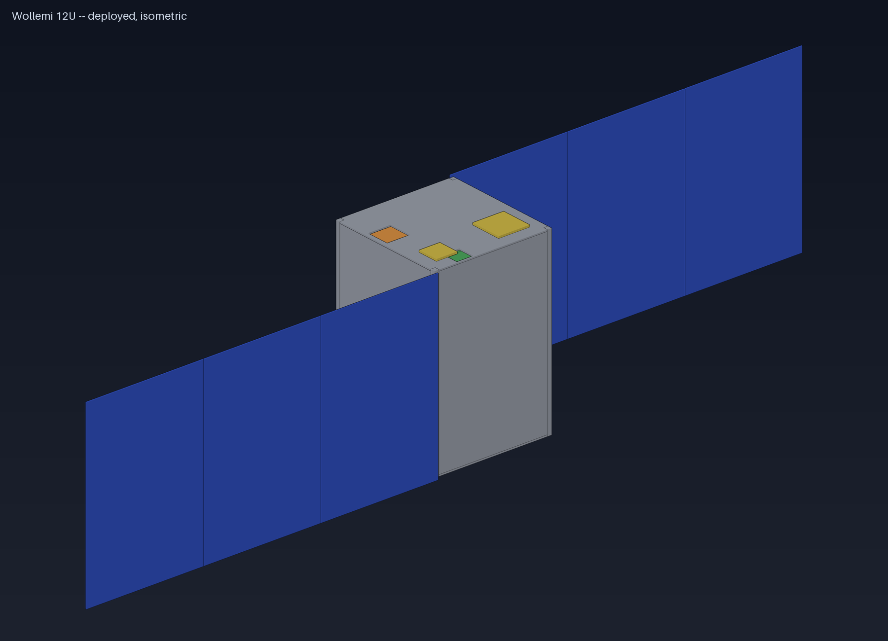
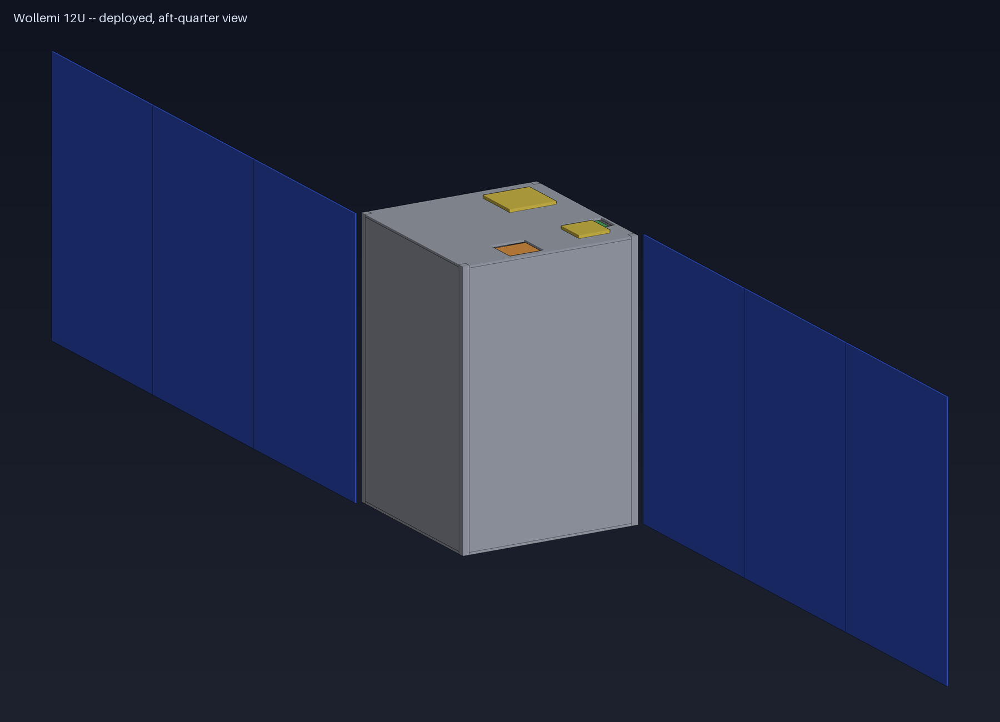
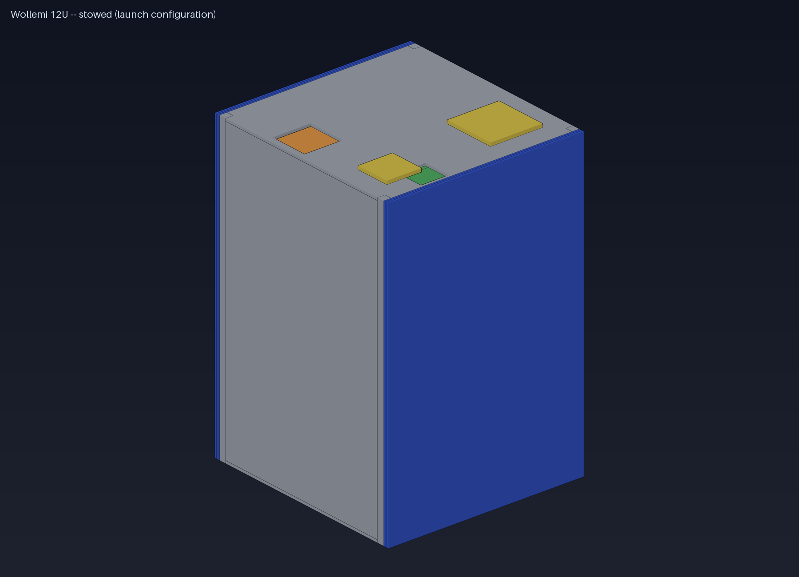
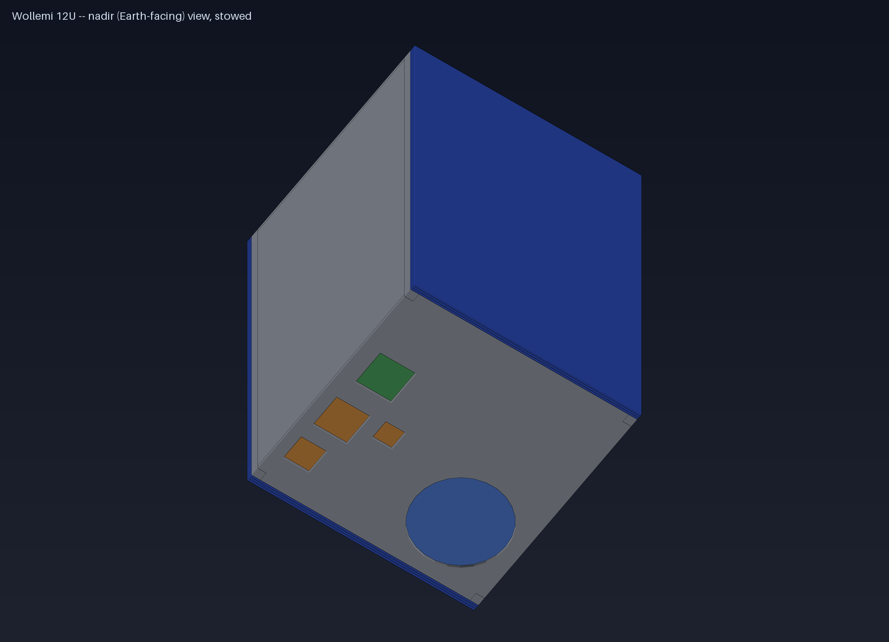
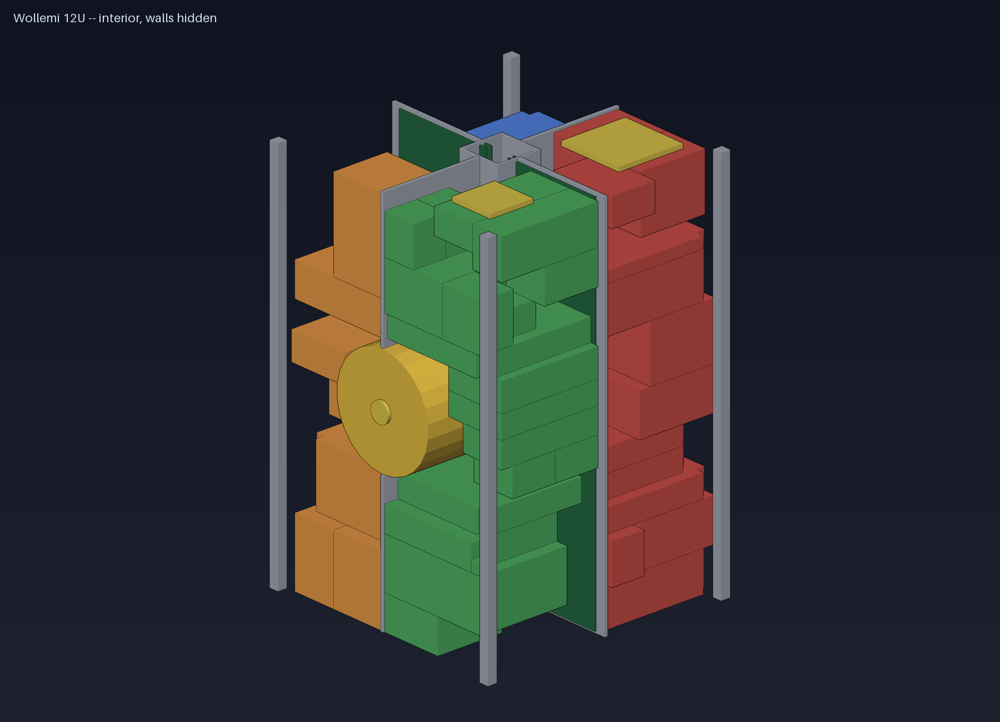
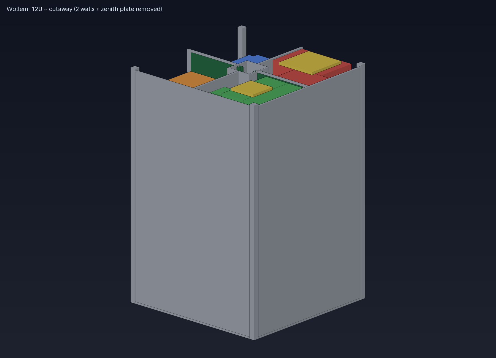
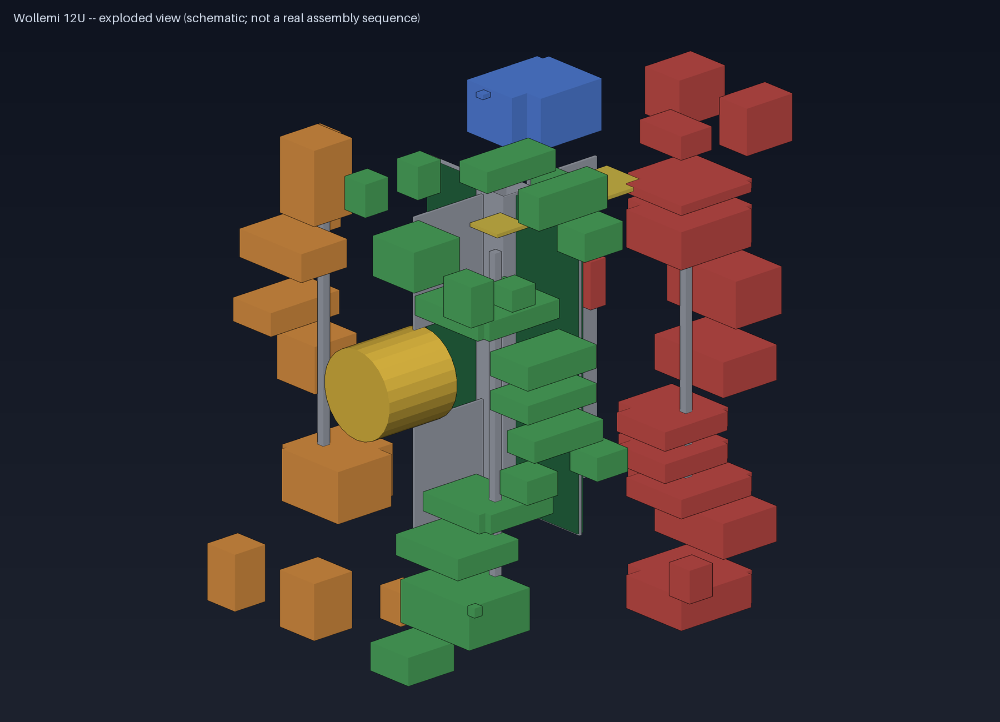
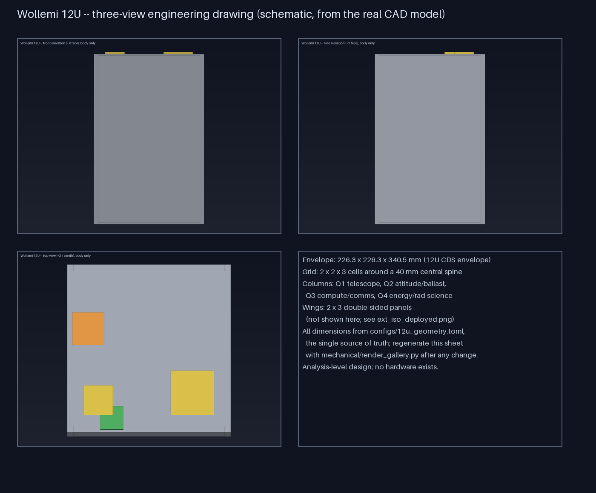
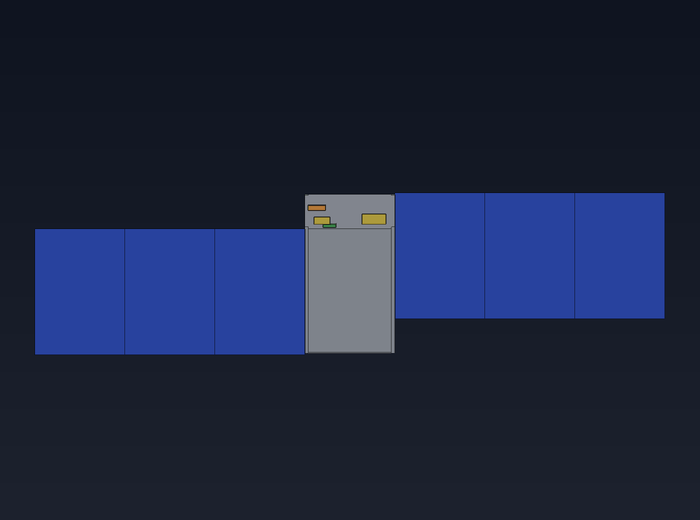
宇宙船は実際のCADジオメトリ（`mechanical/wollemi_cad.py`）であり、実際のNASAブルーマーブル地球写真を使用して実際のパスレーサー（Blender/Cycles）でレンダリングされています。太陽電池とMLIフォイルの表面素材は説明的なものであり、星空は手続き的なものですが、照明とジオメトリは手描きではなく物理的にシミュレーションされています。
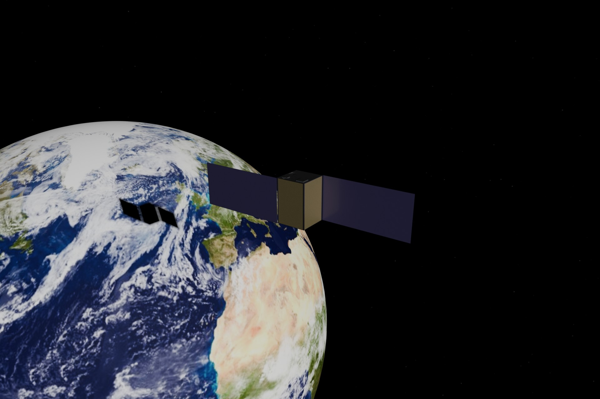
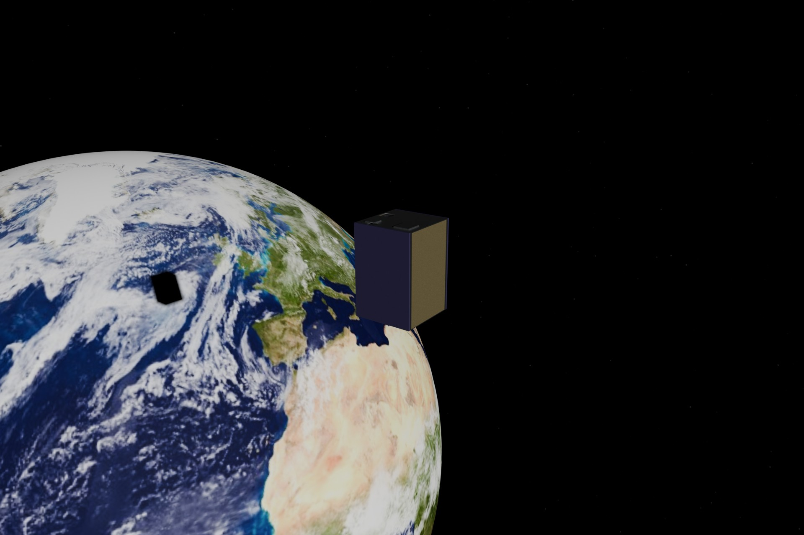
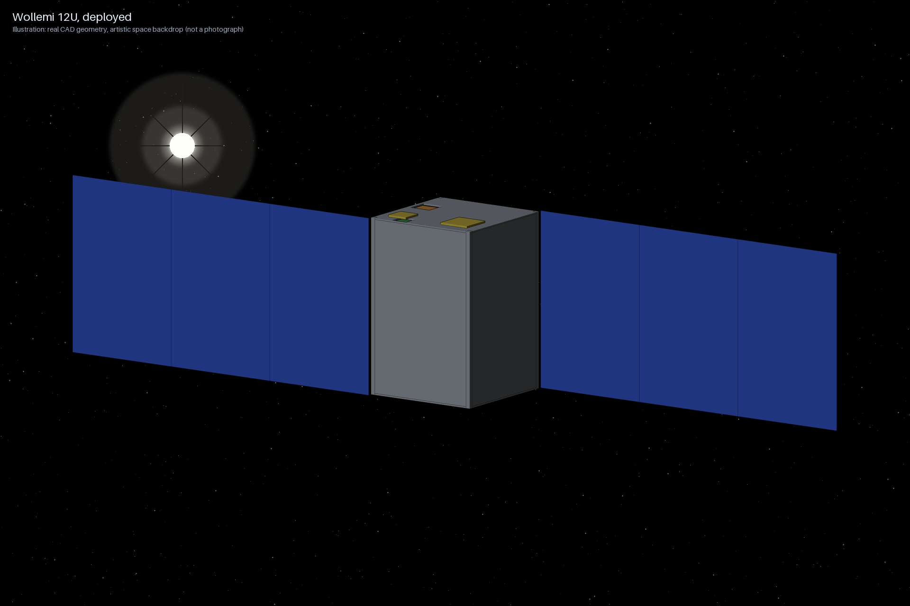
格納された発射構成から完全に展開するまでの翼の展開の概略図。 ヒンジ/アコーディオン機構自体はまだ設計されていません （下記のオープン項目を参照）ため、このアニメーションは実際の機構をシミュレーションするのではなく、各パネルの格納時と展開時のフットプリントを補間しています。これは概念を伝えるためのものであり、検証するためのものではありません。
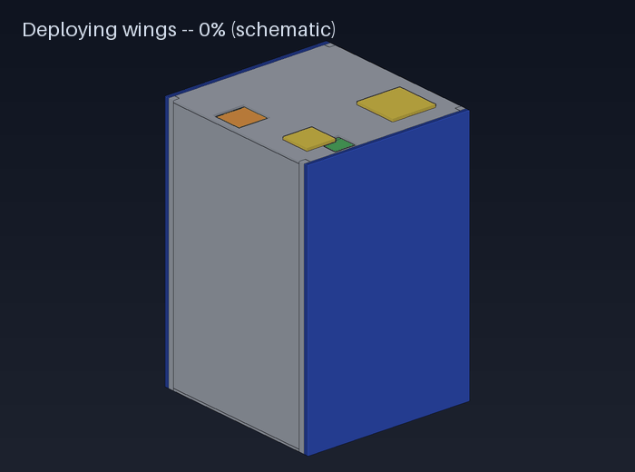
各翼は3枚の両面パネル（両面にセルあり。好ましい夜明けから夕暮れにかけての軌道は、常に片側ではなく翼法線軸上に太陽を保つため必要）を保持しています。スタックあたり6本のホールドダウンポストが、発射構成の振動モードをライドシェアの最小値よりも快適に上回るように保っています。
| 展開されたスパン | 先端から先端まで約2.1m |
|---|---|
| パネル数 | 2枚の翼 × 3枚のパネル、両面 |
| 収納された突出部 | CubeSat設計仕様のレールエンベロープ内 |
| 解放機構 | バーンワイヤー、3つの独立した抑制 |
| フォーム | 12U キューブサットエンベロープ、中央の背骨の周りに2×2×3セルのグリッド、切り欠きのある100×100 mmのカード |
|---|---|
| 質量／パワー | 24kg予算の約16.8kg、58Wの太陽指向、28Wの自転、3Wのセーフモード負荷 |
| 科学ペイロード | 約26の機器：5mクラス望遠鏡＋ハイパースペクトル（共通光学系）、熱赤外線、磁力計、粒子分光計、X線/UVモニター、全太陽放射照度、VLF/ELF、ガンマ線バーストカウンター、放射線線量計、SEU/フラッシュ実験 |
| 計算する | MSP430FRスーパーバイザー、2×STM32H7フライトコントローラー、マスメモリユニット（8×128GB、6+2消去符号化）、Raspberry Pi CM5、NVIDIA Jetson Orin Nano |
| 力 | 2つの独立したLiFePO4チェーン（A/B）と、完全に独立したサバイバルチェーン、ハードウェアのみの保護（トリップパスにMCUなし） |
| 推進 | 中心線上にヨウ素電気格子イオン推進器を配置し、重心を貫通するように傾斜させました。利用可能なデルタVは約570 m/s、ドラッグセイルをパッシブバックアップとします。 |
| 通信 | UHF/LoRaビーコンとコマンド、Sバンド科学ダウンリンク（250 kbps～2 Mbps適応）、Ed25519署名テレコマンド付きCCSDSスペースパケット |
| 軌道（推奨） | 夜明けから夕方までの太陽同期、約700km -- 日食の循環を除去し、熱とバッテリー寿命の観点から好まれる |
| 検証 | 47の要件を追跡しました。ほとんどは実行ごとに自動的にチェックされます。29の物理テストが計画されています。 |
宇宙船はカードケージとして構築されています。同一の100×100 mmのカードがパッシブバックプレーンにスライドし、機器/サブシステムグループごとに1つの柱があります。以下のすべてのボードはリポジトリ内の実際のKiCadファイルです。 electronics/kicad/), DRCクリーン、同じものから生成 card_pinout.toml コネクタ定義のインターフェースドキュメントはこれに基づいて構築されています。 これらはフロアプラン（コンポーネント配置は適合性が証明済み）であり、まだ配線図ではありません。
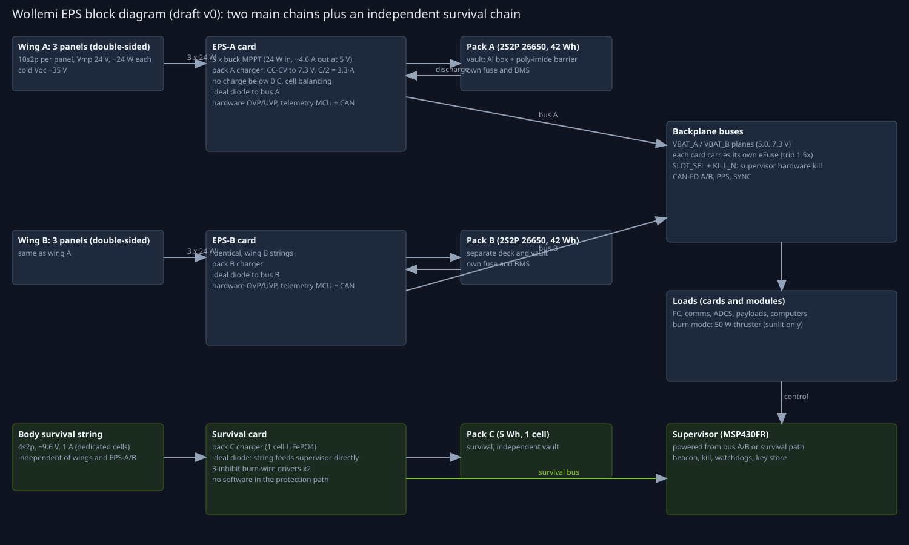
すべてのカードは1つのコネクタペアを共有しています。 WL-P (2×30、電力と制御 -- デュアルバッテリーバスレール、冗長CAN-FD、PPS/同期タイミング、ハードウェア KILL_N スーパーバイザーは、ソフトウェアが介在しない状態で、SWDヘッダーがあれば、カードを取り外すことなくどのカードでも再プログラムできると主張できる) WL-D (2×15、イーサネット/高速レーン、データプレーンカードにのみ搭載)。コネクタピッチは意図的に1.27 mmです。以前の0.8 mmピッチでは、電源チェーンが互いを遮断するため、バックプレーン上に配線することができませんでした。
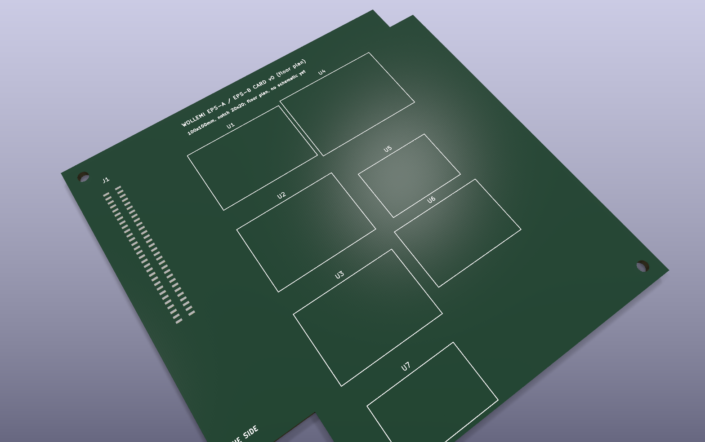
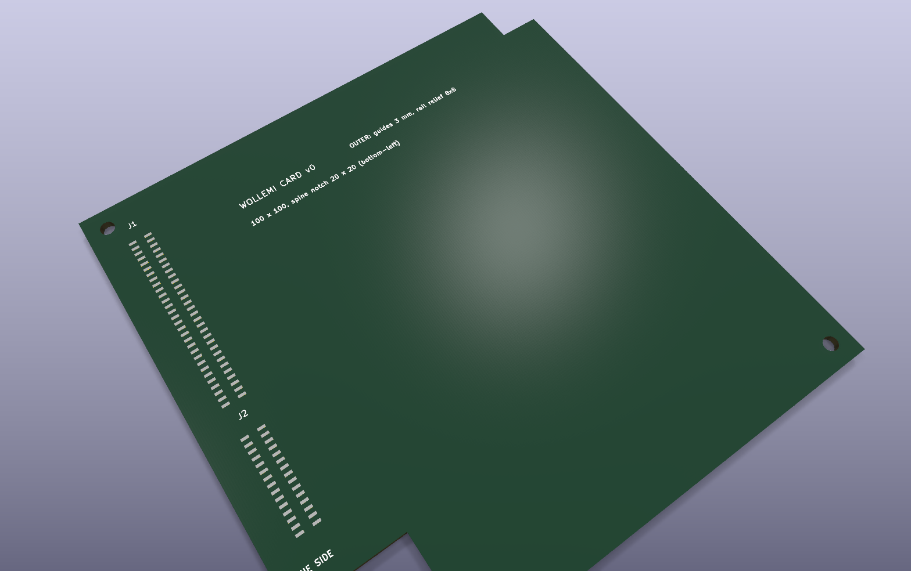
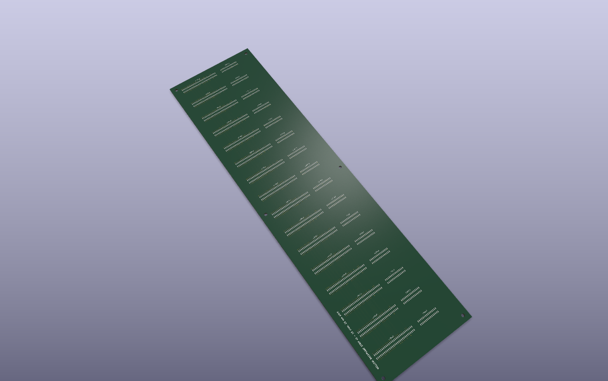
すべてのサブシステムは、チェックが実行されるのと同じ設定ファイルから生成されるため、デザインの変更とそのドキュメントが静かに乖離することはありません。
| サブシステム | 建築 |
|---|---|
| 構造 | 2×2×3セルグリッド（外形寸法 226.3×226.3×340.5 mm）の中央の40 mmの背骨を囲むアルミニウムフレーム。宇宙船内のすべてのカードは、20×20 mmの背骨ノッチと8 mmのレールリリーフを持つ100×100 mmの輪郭を共有している。これは、標準の90/100 mmボードでは背骨をクリアできないため、このプロジェクトのために考案された形式である。翼スタックごとに6本のホールドダウンポストが、角だけでなく、収納された最初のモードを約137 Hzに押し上げている。以前の角のみの解析では99 Hzしか見つからなかった。 |
| 力 | 2つの独立したMPPT/バッテリーチェーン（A、B）と、専用のボディマウント型ソーラーストリングを備えた完全に独立したサバイバルチェーン（C）；カードごとのeFuseとハードウェア KILL_N 保護パス上にソフトウェアが一切ないライン。 |
| 熱 | 完全に受動的。解析の結果、宇宙機は高温ではなく低温で動作することが判明した。真の課題は、太陽電池と専用のMLI/低放射率パッチで表面の約半分を分割することによって回避される、-27°Cの食害ケースと-40°Cのセーフモードケースである。望遠鏡の柱には独自の低α/低εコーティングと8Wの恒温ヒーター（設定温度14～17°C）が装備されており、バッテリー保管庫は6Wのヒーターで隔離されている（0.1W/K）、生存ストリングには独自の2Wヒーターが装備されており、-20°Cを下回らないようにしている。 |
| 姿勢と推進 | 3つのリアクションホイール（各30 mN・m・s）、磁気トルカ、および恒星トラッカー（5秒角、地上誤差約17 m）により、トルクと運動量に3倍の余裕をもって約120秒で90°のスルーが完了します。比推力については、推進剤は水抵抗ジェットではなく電気式（ヨウ素グリッドイオン/ホールクラス）です。ヨウ素0.5 kgは、水0.8 kgによる約45 m/sに対して約570 m/sを賄うのに十分であり、これは50年間の抗力補償、衝突回避、およびタンク1つからの制御された軌道離脱に十分です。 スラスタは中心線上に配置され、重心に対して数度傾けられています。以前のインカラム配置では、7分で車輪を飽和させるのに十分な軸外トルクが発生しました。ドラッグセイルが受動的なバックアップです。 |
| 計算する | 5階層の階層構造で、下層は意図的に過剰にプロビジョニングされています。MSP430FRスーパーバイザーとデュアルホットスタンバイのSTM32H7フライトコントローラーは、50年間のミッション全体にわたって評価されています。なぜなら、長期記録の宇宙天気科学は、Linuxシデーが故障すると予想されるずっと後も稼働し続けなければならないからです。その上には、10〜15年のデザイン寿命を持つRaspberry Pi CM5（常時稼働）とNVIDIA Jetson Orin Nano（画像処理、重い計算）が配置されています。マスメモリユニットは、6+2の消去符号化、BLAKE2ハッシュ、および定期的なスクラビングを備えた8×128 GBを保持しています。 |
| データと通信 | 27のCCSDSメッセージタイプ。すべてのテレコマンドはカウンターと有効期間でEd25519署名されています（アマチュアバンドの規則により、リンク自体は暗号化されていません）。制御プレーンは冗長性のためにデュアルCAN-FD（1 Mbps/5 Mbps）であり、ギガビットイーサネットプレーンがペイロードデータを伝送します。ダウンリンクはUHF/LoRaのハウスキーピング（約0.5 MB/日）と、適応型Sバンドの科学リンク（250 kbps-2 Mbps）で構成されています。パムッカルレ参照局単体から、およそ28分の接触時間と3～4回のパスで約134 MB/日となります。 |
| ペイロード | 26の機器が寿命によって明確に分類されている。長期記録の宇宙天気/地球物理学科学（三軸磁力計、全太陽放射照度放射計、放射線線量計、16電子/16陽子粒子分光計、X線/UVモニター、CsI+SiPMガンマ線バースト検出器、チップスケール原子時計）は、フライトコントローラーによって直接取得され、Linuxノードによって取得されることはない。 イメージング――約5mの地上サンプル距離における85mmカセグレン望遠鏡、同じ光学系を共有する約50バンドのハイパースペクトルチャネル、熱赤外マイクロボロメーター、広視野の恒星/コンテキストカメラ――はPi/Jetson側で動作します。上記のすべての機器番号は、構築・試験された機器によるものではなく、分析によってのみ検証されたデザイン目標です。 |
| 地上および運用 | 公開された地上セグメントの階層は2つあります。ビコンを受信するための誰でも構築できる30〜80 UHF/LoRaリスナーと、完全なダウンリンクのための約2,200〜4,500ドルのSバンド科学ステーション（1.2mアンテナ、SPID BIG-RASローテーター）です。27のプロトコルメッセージはすべて、コンパイルされ検証済みのKaitai Structデコーダーを持っており、SatNOGS DB/デコーダー統合が計画されているため、どのステーションでもこのリポジトリに触れることなくテレメトリをデコードできます。2つ目のアンカー地上局が提案されていますが、まだ手配されておらず、周波数調整/ライセンス取得は開始されていません。 |
50年はほとんどの衛星事業者の寿命よりも長い。監視装置とビーコンは、このコードを書いた誰もが去った後も信号を送り続けるように作られている。
デザインは解析レベルで完了しています。以下はすべて自動的にチェックされます。 python tools/check_all.py 変更のたびに――ここにあるものはどれも単発の主張ではありません。